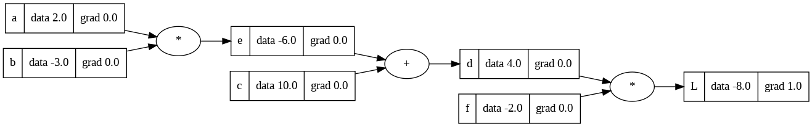

Building an Autograd Engine: An Illustrative and Interactive Guide
In this article, we will build an Autograd engine and a neural network library that handle an N-dimensional array. Autograd is a tool used for derivative calculation. It tracks operations on values with enabled gradients and builds a dynamic computational graph — a graph without cycles. Input values serve as the leaves of the graph, while output values act as its roots. Gradients are computed by traversing the graph from root to leaf, applying the chain rule to multiply gradients at each step.
Neural networks are complex mathematical functions that are adjusted through a process called training to produce the desired output. Backpropagation is a key algorithm used in this training process. It computes gradients, which represent the change in loss for small adjustments in input weights and biases. These gradients are then utilised to update the weights and biases, with a learning rate applied to reduce the overall loss and train the neural network. This fine-tuning is also used to carefully adjust the parameters of a pre-trained model to adapt it to a specific task or dataset. The training process occurs iteratively, involving the calculation of multiple gradients. A computation graph is constructed to store these gradient functions.
Andrej Karaphy's Micrograd and his video tutorial about building Micrograd, from which I would take a few examples, served as inspiration for this article. But this Autograd engine will accept N-dimensional array, whereas Microgard accepts scalar values only.
While assuming a basic understanding of Python programming, high school calculus, and neural networks, I'll provide various teaching methods for those who may not have that background. This includes line-by-line Python code explanations and visualizations of the output. The article includes an interactive area to explore derivatives, utilizing concepts from calculus. For a comprehensive understanding, I recommend watching 3Blue1Brown's video series on neural networks and backpropagation. In the final video, he covers the Chain Rule, which is the mathematical foundation of backpropagation. Additionally, Jay Alammar's article on neural network basics is highly recommended.
Exploring the building blocks of neural networks and their training process, the journey begins with the basics of derivatives and covers various examples and methods. Delving into backpropagation, the focus is on understanding how to perform it manually and programmatically, including implementation techniques. Creating an autograd class from scratch and utilizing it to train a neural network on a dataset is the next step, leading to the development of a simple neural network library using our autograd class.
Let's dive right in and begin with the fundamentals.
What is Derivates?
Derivatives help us understand how things are changing at a specific point. They are like speedometers that measure the rate of change of a quantity or the slope of a curve. By calculating derivatives, we can gain insights into motion, growth, and other dynamic processes.The derivative of a function is calculated using a specific mathematical formula. Let's denote the derivative of a function \( f(x) \) as \( f'(x) \) or \( \frac{dy}{dx} \), where \( y \) represents the dependent variable and \( x \) represents the independent variable.
The general formula for finding the derivative of a function \(f(x)\) is:
\( f'(x) = \lim_{h \to 0} \frac{{f(x + h) - f(x)}}{h} \)
In simpler terms, the derivative is calculated by taking the difference between the function values at two nearby points and dividing it by the difference in their corresponding x-values, as the difference approaches zero \( (h \to 0) \).
For example, if we have a function \( f(x) = 2x^2 \), we can find its derivative using the formula:
\( f'(x) = \lim_{{h \to 0}} \frac{{2(x + h)^2 - 2x^2}}{{h}} \)
By expanding and simplifying the expression, we can find the derivative \( f'(x) = 4x \).
This formula allows us to find the instantaneous rate of change or slope of the function at any specific point. It provides valuable information about how the function is changing at different locations along the x-axis.
Single-input derivative
First, we'll create a basic function to compute the derivative of a scalar value. Subsequently, we'll perform theoretical differentiations on these expressions using identical values and verify that their outputs match. Lastly, we'll include an interactive section where we can adjust variable values and determine the derivatives of the given function with the chosen values.Let's go through each line of the code and explain what it does:
-
def f(x):: This line defines a function namedfthat takes a single input parameterx. The function calculates and returns the result of the equation \( 3 * x^2 - 4 * x + 5 \).
-
return 3*x**2 - 4*x + 5: This line specifies the equation that the functionfevaluates. It calculates the result of the quadratic expression \( 3 * x^2 - 4 * x + 5 \) and returns that value.
-
f(3.0): This line calls the functionfwith an input value of3.0. It calculates the result of the expression \( 3 * x^2 - 4 * x + 5 \) with \( x \) set to \( 3.0 \) and returns the result.
-
h = 0.001: This line assigns a value of0.001to the variableh. In this context,hrepresents a small value used to approximate the derivative of the function.
-
x = 3.0: This line assigns a value of3.0to the variablex. This represents the point at which we want to evaluate the derivative of the function.
-
(f(x + h) - f(x))/h: This line calculates the approximate derivative of the functiondef f(x):at the point \( x \) using the finite difference method. It evaluates the expression \( \frac{{f(x + h) - f(x)}}{h} \), where \( f(x + h) \) represents the value of the function at \( x + h \), \( f(x) \) represents the value of the function at \( x \), and \( h \) is a small increment. This expression calculates the slope between two nearby points on the function and then divides it by \( h \) to approximate the derivative.
f that represents a quadratic equation. It then sets the values of h and x, representing the small increment and the point at which to evaluate the derivative, respectively. Finally, it calculates the approximate derivative of the function at x using the finite difference method and returns the result.
Theoretically differentiate the \( f(x) = 3x^2 - 4x + 5 \)
To differentiate the function \( f(x) = 3x^2 - 4x + 5 \), we can apply the power rule and the constant rule of differentiation. The power rule states that the derivative of \( x^n \) (where \( n \) is a constant) is \( n * x^{(n-1)} \). The constant rule states that the derivative of a constant term is always zero.Let's find the derivative of \( f(x) \) step by step:
\( f(x) = 3x^2 - 4x + 5 \)
To find the derivative, we differentiate each term separately:
The derivative of \( 3x^2 \) with respect to \( x \) is:
\( \frac{{d}}{{dx}} (3x^2) = 2 * 3x^{(2-1)} = 6x \)
The derivative of \( -4x \) with respect to \( x \) is:
\( \frac{{d}}{{dx}} (-4x) = -4 \)
The derivative of the constant term \( 5 \) with respect to \( x \) is:
\( \frac{{d}}{{dx}} (5) = 0 \)
Rewrite the derivative as follows:
\( f'(x) = 6x - 4 \)
To find the value of the derivative at \( x = 3 \), we substitute \( x = 3 \) into the derivative expression:
\( f'(3) = 6 * 3 - 4 = 18 - 4 = 14 \)
Therefore, the derivative of \( f(x) = 3x^2 - 4x + 5 \) at \( x = 3 \) is \( 14 \).
Theoretically differentiate the expression \(\frac{{f(x + h) - f(x)}}{h}\) where \( h = 0.001 \) and \( x = 3.0 \), and \( f(x) = 3x^2 - 4x + 5 \)
To differentiate the expression \(\frac{{f(x + h) - f(x)}}{h}\) where \( h = 0.001 \) and \( x = 3.0 \), and \( f(x) = 3x^2 - 4x + 5 \), we can substitute these values into the expression and simplify it.Start by substituting the given values into the expression:
\(\frac{{f(x + h) - f(x)}}{h}\) \( = \) \(\frac{{f(3.0 + 0.001) - f(3.0)}}{{0.001}}\)
Calculate the values of \( f(3.0 + 0.001) \) and \( f(3.0) \):
\( f(3.0 + 0.001) = 3 * (3.0 + 0.001)^2 - 4 * (3.0 + 0.001) + 5 \)
\( = 3 * (3.001)^2 - 4 * (3.001) + 5 \)
\( = 3 * 9.006001 - 12.004 + 5 \)
\( = 27.018003 - 12.004 + 5 \)
\( = 20.014003 \)
\( f(3.0) = 3 * (3.0)^2 - 4 * (3.0) + 5 \)
\( = 3 * 9 - 12 + 5 \)
\( = 27 - 12 + 5 \)
\( = 20 \)
Substituting these values back into the expression:
\( \frac{{f(x + h) - f(x)}}{h} \)
\( = \frac{{20.014003 - 20}}{{0.001}} \)
\( = \frac{{0.014003}}{{0.001}} \)
\( = 14.003 \)
Therefore, the value of the expression \( \frac{{f(x + h) - f(x)}}{h} \) when \( h = 0.001 \) and \( x = 3.0 \) is \( 14.003 \).
Play with single-input derivative!
and with adding slope of \( h = \) 0.001 is
\( f(x + h) = \) 3.0 \( (x + h)^2 \) -4.0 \( (x + h) \) +5.0 \( = \)
\( f(x) \) = 3.0 \( x^2 \) -4.0 \( x \) +5.0 \( = \)
Multi-input derivative
In this section, we will create two functions. One function will involve incrementing one variable by a small amount proportional to the slope, allowing us to approximate the derivative of the expression with respect to that variable. We will then proceed to theoretically differentiate the given expression with respect to one of its variables using identical values, ensuring that the results match. Finally, an interactive section will be provided where variable values can be adjusted, and the variable for which the expression's derivative is computed can be changed.Let's go through each line of the code and explain what it does:
-
h = 0.0001: This line assigns a value of0.0001to the variableh. In this code,his referred to as the "slope," but it is actually a small increment used for approximating the derivative.
-
a = 2.0,b = -3.0,c = 10.0: These lines assign specific values to the variablesa,bandc. These values represent the inputs for the function or expression we are working with.
-
d1 = a * b + c: This line calculates the value of the expression \( a * b + c \) and assigns it to the variabled1.
-
a += h: This line increments the value ofaby addinghto it. The purpose is to create a new value for a to be used in the next line.
-
d2 = a * b + c: This line calculates the value of the expression \( a * b + c \) using the updated value ofaand assigns it to the variabled2.
-
print('d1: ', d1),print('a: ', a),print('d2: ', d2),print('slope: ', (d2 - d1)/h): These lines print the values ofd1,a,d2and the slope (approximated derivative) calculated as \(\frac{{d2 - d1}}{h}\).
h) and the inputs (a, b and c). It then performs calculations using these values to find d1 and d2, representing the expressions \( a * b + c \) at different values of a. Finally, it prints the values of d1, a, d2, and the slope calculated using the finite difference method.
Theoretically differentiate \( a * b + c \) with respect to \( a \)
To differentiate the expression \( a * b + c \) with respect to \( a \), we need to find the derivative of the expression with respect to \( a \). Given that \( a = 2.0 \), \( b = -3.0 \), and \(c = 10.0 \), let's proceed with the differentiation.The expression \( a * b + c \) involves multiplication and addition. To find the derivative with respect to \( a \), we differentiate each term separately:
The derivative of \( a * b \) with respect to \( a \) is:
\( \frac{{d}}{{da}} (a * b) = b \)
The derivative of \( c \) with respect to \( a \) is:
\( \frac{{d}}{{da}} (c) = 0 \)
Since \( c \) is a constant, its derivative with respect to \( a \) is always \( 0 \).
Rewrite the derivative as follows:
\( \frac{{d}}{{da}} (a * b + c) = b + 0 = b \)
Substituting the given values \( a = 2.0 \), \( b = -3.0 \), and \(c = 10.0 \) into the derivative expression, we get:
\( \frac{{d}}{{da}} (2.0 * -3.0 + 10.0) = -3.0 \)
Therefore, the derivative of the expression \( a * b + c \) with respect to \( a \), when \( a = 2.0 \), \( b = -3.0 \), and \(c = 10.0 \), is \( -3.0 \).
Play with multi-input derivatives!
+= \( h = \)
\( \text{D2} = a * b + c = \)
\( \text{Slope} = \frac{{d2 - d1}}{{h}} = \)
Differentiate \( a * b + c \) with respect to is
and with adding slope of \( h = \) 0.001 is
Implementing backpropagation
Now that a basic understanding of the derivative has been established, let's move forward with building the neural networks. The first step involves creating a class capable of handling N-dimensional array. The values and gradients will be stored in this class, as neural networks entail complex mathematical expressions. The development of these data structures will commence promptly. However, prior to that, the process of backpropagation will be manually performed. Subsequently, the automation of backpropagation will be achieved using the example-based explanation provided below.Manual backpropagation
In this section, the exploration of the manual process of backpropagation will take place, which involves utilizing the chain rule to compute gradients. Backpropagation is a technique that leverages the chain rule to efficiently calculate gradients in a neural network with multiple layers. By propagating the error backwards through the layers, it becomes a crucial algorithm for training neural networks.The chain rule plays a vital role by allowing us to break down the intricate task of adjusting weights and biases in a neural network into smaller, manageable steps. By considering the influence of each layer on the subsequent layer, we can ascertain how modifications in the network's parameters impact its output. This knowledge is then utilized to enhance the network's performance during the training process.
In order to comprehend the process, we will manually demonstrate the assignment and initialization of variables, followed by performing calculations on them to construct an expression. It is important to note that the subsequent section will illustrate how these tasks can be accomplished programmatically.
\( a = 2.0 \)
\( b = -3.0 \)
\( c = 10.0 \)
\( e = a * b \)
\( d = e + c \)
\( f = -2.0 \)
\( L = d * f \)
Substitute the expressions to obtain the expression for \( L \):
\( L = d * f \)
\( L = (e + c) * f \)
\( L = (a * b + c) * f \)
Expand the expression:
\( L = (2.0 * -3.0 + 10.0) * -2.0 \)
\( L = (-6.0 + 10.0) * -2.0 \)
\( L = 4.0 * -2.0 \)
\( L = -8.0 \)
Next, we will visually represent the output and observe its appearance. It is not necessary to concern ourselves with the specifics of graph generation at this point, as the upcoming section will provide detailed instructions on how to generate such graphs.

Manually assign the gradient value of the variable \( L.grad \) to \( 1.0 \).
Upon updating the gradient value of the variable \( L.grad \) to \( 1.0 \), the resulting diagram will display the following visual representation.

Differentiation process for product expressions
Moving forward with the backpropagation process, our focus will now shift towards examining the derivatives of \( L \) with respect to \( d \) and \( f \). Our first step will involve calculating the derivative of \( d \).To differentiate \( L \) with respect to \( d \), we treat all other variables (\( a \), \( b \), \( c \), and \( f \)) as constants since they don't depend on \( d \). The derivative of \( a \) constant multiplied by \( a \) variable is simply the constant itself. Therefore, the derivative of \( d \) with respect to \( d \) is \( 1 \):
\( \frac{{dL}}{{dd}} = f * 1 \)
\( \frac{{dL}}{{dd}} = -2.0 * 1 \)
\( \frac{{dL}}{{dd}} = -2.0 \)
So, the derivative of \( L \) with respect to \( d \), denoted as \( \frac{{dL}}{{dd}} \), is equal to \( -2.0 \).
We can prove that the derivative of \( L \) with respect to \( d \), denoted as \( \frac{{dL}}{{dd}} \), is equal to \( -2.0 \) using the definition of the derivative.
Given:
\( L = d * f \)
The derivative of \( L \) with respect to \( d \), denoted as \( \frac{{dL}}{{dd}} \), is defined as the limit of the difference quotient as \( h \) approaches \( 0 \):
\( \frac{{dL}}{{dd}} = \lim_{{h \to 0}} \frac{{L(d + h) - L(d)}}{{h}} \)
Substitute the expression for \( L \):
\( \frac{{dL}}{{dd}} = \lim_{{h \to 0}} \frac{{(d + h) * f - d * f}}{{h}} \)
Expand the expression:
\( \frac{{dL}}{{dd}} = \lim_{{h \to 0}} \frac{{d * f + h * f - d * f}}{{h}} \)
Simplify:
\( \frac{{dL}}{{dd}} = \lim_{{h \to 0}} \frac{{h \cdot f}}{{h}} \)
Cancel out \( h \):
\( \frac{{dL}}{{dd}} = \lim_{{h \to 0}} f \)
Substitute the value of \( f \):
\( \frac{{dL}}{{dd}} = -2.0 \)
Therefore, the derivative of \( L \) with respect to \( d \), denoted as \( \frac{{dL}}{{dd}} \), is indeed equal to \( -2.0 \).
We can apply the same mathematical principles to solve the derivatives of the product expressions. For instance, the derivative of \( L \) with respect to \( d \) is equal to \( f \), and the derivative of \( L \) with respect to \( f \) is equal to \( d \), with a specific value of \( 4.0 \). By following this logic, you can solve similar examples without the need for repetitive differentiation.
Update the gradient values of the variables \( d \) and \( f \). Specifically, \( d.grad \) will be assigned a value of \( -2.0 \), and \( f.grad \) will be assigned a value of \( 4.0 \). Once these updates are applied, the resulting diagram will display the following visual representation.

Differentiation process for sum expressions
The next step involves determining the gradient values of the variables \( e \) and \( c \).To find the derivative of the expression \( d = c + e \) with respect to \( c \), we differentiate the expression with respect to \( c \) while treating \( e \) as a constant. Since the derivative of a constant with respect to any variable is \( 0 \), the derivative of \( e \) with respect to \( c \) is \( 0 \).
Therefore, the derivative of \( d \) with respect to \( c \), written as \( \frac{{dd}}{{dc}} \), is simply \( 1 \).
To prove the derivative of \( d = c + e \) with respect to \( c \) using the definition of the derivative, we need to compute the following limit:
\( \frac{{dd}}{{dc}} = \lim_{{h \to 0}} \frac{{d(c + h) - d(c)}}{{h}} \)
Start by evaluating \( d(c + h) \) and \( d(c) \):
\( d(c + h) = (c + h) + e = c + h + e \)
\( d(c) = c + e \)
Substituting these values into the limit expression, we have:
\( \frac{{dd}}{{dc}} = \lim_{{h \to 0}} \frac{{c + h + e - (c + e)}}{{h}} \)
Simplifying the expression inside the limit:
\( \frac{{dd}}{{dc}} = \lim_{{h \to 0}} \frac{{c + h + e - c - e}}{{h}} \)
\( \lim_{{h \to 0}} \frac{{h}}{{h}} \)
\( \lim_{{h \to 0}} 1 \)
\( = 1 \)
Therefore, we have shown that the derivative of \( d = c + e \) with respect to \( c \) is \( 1 \), which confirms our initial result.
We can apply the same mathematical principles to solve the derivatives of sum expressions. For instance, the derivative of \( d \) with respect to \( c \) is equal to \( 1.0 \), and the derivative of \( d \) with respect to \( e \) is equal to \( 1.0 \). By following this logic, you can solve similar examples without the need for repetitive differentiation.
We have obtained the local derivatives of \( \frac{{dL}}{{dd}} \), \( \frac{{dd}}{{dc}} \), and \( \frac{{dd}}{{de}} \). Now, let's determine the derivatives of \( L \) with respect to \( c \) and \( e \), represented as \( \frac{{dL}}{{dc}} \) and \( \frac{{dL}}{{de}} \), respectively.
To find \( \frac{{dL}}{{dc}} \), apply the Chain rule:
\( \frac{{dL}}{{dc}} = \frac{{dL}}{{dd}} * \frac{{dd}}{{dc}} \)
\( \frac{{dL}}{{dc}} = -2.0 * 1.0 \)
\( \frac{{dL}}{{dc}} = -2.0 \)
Similarly, employing the Chain rule, we can find \( \frac{{dL}}{{de}} \):
\( \frac{{dL}}{{de}} = \frac{{dL}}{{dd}} * \frac{{dd}}{{de}} \)
\( \frac{{dL}}{{de}} = -2.0 * 1.0 \)
\( \frac{{dL}}{{de}} = -2.0 \)
Update the gradient values of the variables \( c \) and \( e \). Specifically, \( c.grad \) will be assigned a value of \( -2.0 \), and \( e.grad \) will be assigned a value of \( -2.0 \). Once these updates are applied, the resulting diagram will display the following visual representation.

Finally, in order to determine the local derivative of \( e \) with respect to \( a \) and \( b \), we will employ the differentiation method for product expressions. According to this approach, the derivative of \( e \) with respect to \( a \) is equivalent to \( b \), whose value is \( -3.0 \), and the derivative of \( e \) with respect to \( b \) is equal to \( a \), whose value is \( 2.0 \). Therefore, we now possess the values of \( \frac{{dL}}{{de}} \), \( \frac{{de}}{{da}} \), and \( \frac{{de}}{{db}} \). To find the values of \( \frac{{dL}}{{da}} \) and \( \frac{{dL}}{{db}} \), we will utilize the chain rule, as demonstrated above.
To find \( \frac{{dL}}{{da}} \), apply the Chain rule:
\( \frac{{dL}}{{da}} = \frac{{dL}}{{de}} * \frac{{de}}{{db}} \)
\( \frac{{dL}}{{da}} = -2.0 * -3.0 \)
\( \frac{{dL}}{{da}} = 6.0 \)
Similarly, employing the Chain rule, we can find \( \frac{{dL}}{{db}} \):
\( \frac{{dL}}{{db}} = \frac{{dL}}{{de}} * \frac{{de}}{{da}} \)
\( \frac{{dL}}{{db}} = -2.0 * 2.0 \)
\( \frac{{dL}}{{db}} = -4.0 \)
Update the gradient values of the variables \( a \) and \( b \). Specifically, \( a.grad \) will be assigned a value of \( 6.0 \), and \( b.grad \) will be assigned a value of \( -4.0 \). Once these updates are applied, the resulting diagram will display the following visual representation.

Now that we have gained an understanding of manual backpropagation, if you wish to verify the accuracy of the gradient values obtained through differentiation, you can explore the interactive sections for single and multiple input derivatives. Additionally, we will now proceed to automate the backpropagation process. By comparing the gradient values obtained through automation with the manually calculated values, we can ensure the accuracy of our process and calculations.
Automate backpropagation
The functionality of theValue class is to implement automatic differentiation, which allows for computing gradients of mathematical expressions with respect to their inputs. The class represents a value or variable in a computational graph, where each value can be connected to other values through mathematical operations. Let's proceed with creating one function at a time within the
Value class, and meticulously analyze each line of the code to provide an explanation of its purpose and functionality. The
__init__ method initializes an instance of the Value class. It takes in a data parameter, which can be a NumPy array or any data that can be converted into a NumPy array. If data is already a NumPy array, it is stored directly. Otherwise, it is converted into a NumPy array using np.array(data). The
grad attribute is initialized as an array of zeros with the same shape as the data array. This attribute is used to store the gradient (derivative) of the node with respect to some output. The
_backward attribute is a placeholder for the backward function, which is used for backpropagation in neural networks. It is initially set to a lambda function that does nothing. The
_prev attribute is a set that keeps track of the previous nodes (parents) in the computation graph. This is used to determine the dependencies between nodes during backpropagation. The
_op attribute stores the operation associated with the current node. This can be used to identify the type of operation performed on the node, such as addition, multiplication, etc. The
label attribute is an optional label for the node, which can be used for identification or debugging purposes. In summary, this code defines a class that represents a node in a computation graph, with functionality to store data, compute gradients, and manage dependencies.
The
__add__ method is overridden in the Value class to define the behavior of the addition operation (+) between two Value objects. This method allows adding two Value instances together. Inside the
__add__ method, the other parameter is checked to see if it is already a Value object. If not, it is converted into a Value object using Value(other). A new
Value instance called out is created to represent the result of the addition operation. The data of out is obtained by adding the data of self (the current instance) and the data of other. The parents of out are set as self and other, and the operation associated with out is set as '+'. A nested function
_backward is defined within the __add__ method. This function is responsible for calculating the gradients using the chain rule and updating the gradients of the operands (self and other). The gradient of self is updated by adding the element-wise multiplication of \( 1.0 \) and the gradient of out. Similarly, the gradient of other is updated by adding the element-wise multiplication of \( 1.0 \) and the gradient of out. The
_backward function is then assigned to the _backward attribute of the out instance, effectively replacing the placeholder backward function with the actual backward function. Finally, the
out instance representing the result of the addition operation is returned. In summary, the
__add__ method allows adding two Value instances together and defines the necessary computations for calculating gradients during backpropagation. The
__mul__ method is overridden in the Value class to define the behavior of the multiplication operation (*) between two Value objects. This method allows multiplying two Value instances together. Similar to the
__add__ method, the other parameter is checked to determine if it is already a Value object. If not, it is converted into a Value object using Value(other). A new
Value instance called out is created to represent the result of the multiplication operation. The data of out is obtained by element-wise multiplying the data of self (the current instance) and the data of other. The parents of out are set as self and other, and the operation associated with out is set as '*'. A nested function
_backward is defined within the __mul__ method. This function calculates the gradients using the chain rule and updates the gradients of the operands (self and other). The gradient of self is updated by adding the element-wise multiplication of other.data and the gradient of out. Similarly, the gradient of other is updated by adding the element-wise multiplication of self.data and the gradient of out. The
_backward function is assigned to the _backward attribute of the out instance, replacing the placeholder backward function. Finally, the
out instance representing the result of the multiplication operation is returned. In summary, the
__mul__ method allows multiplying two Value instances together and defines the necessary computations for calculating gradients during backpropagation. The
__pow__ method is overridden in the Value class to define the behavior of the power operation (**) between two Value objects. This method allows raising a Value instance to a scalar exponent or element-wise raising a Value instance to another Value instance. If the
other parameter is a scalar (integer or float), an element-wise power operation is performed. The self.data is raised to the power of other, and the result is stored in out_data. A new Value instance called out is created with out_data as the data, self as the parent, and f'**{other}' as the operation label. The
_backward function is defined for the scalar exponent case. It calculates the gradients using the chain rule and updates the gradient of self. The gradient update involves multiplying other with np.power(self.data, other - 1) and then multiplying the result with the gradient of out. The computed gradient is added to self.grad. If the
other parameter is a Value instance, an element-wise power operation is performed. The self.data is raised to the power of other.data, and the result is stored in out_data. A new Value instance called out is created with out_data as the data, self and other as parents, and '**' as the operation label. The
_backward function is defined for the Value exponent case. It calculates the gradients using the chain rule and updates the gradients of self and other. The gradient update for self involves multiplying other.data with np.power(self.data, other.data - 1) and then multiplying the result with the gradient of out. The computed gradient is added to self.grad. The gradient update for other involves multiplying np.log(self.data) with the gradient of out and adding it to other.grad. In case the
other parameter is neither a scalar nor a Value instance, a TypeError is raised to indicate unsupported operand types. In summary, the
__pow__ method allows raising a Value instance to a scalar exponent or element-wise raising a Value instance to another Value instance. It defines the necessary computations for calculating gradients during backpropagation in each case. The code provides additional method overrides in the
Value class: -
__radd__method allows performing right addition by theValueinstance. It returns the result of additionselfbyotherusing the+operator.
-
__rmul__method allows performing right multiplication by theValueinstance. It returns the result of multiplyingselfbyotherusing the*operator.
-
__truediv__method allows performing true division by theValueinstance. It returns the result of dividingselfbyotherusing the/operator. This is achieved by multiplyingselfbyotherraised to the power of \( -1 \).
-
__neg__method allows performing negation of theValueinstance. It returns the negation ofselfby multiplying it with \( -1 \).
-
__sub__method allows performing subtraction of aValueinstance. It returns the result of subtractingotherfromselfusing the-operator. This is achieved by addingselfto the negation ofother.
Value instances and allow for a more expressive and intuitive usage of the Value class. The
exp method is defined in the Value class to compute the element-wise exponential of a Value instance. The method begins by retrieving the
self.data array and assigning it to the variable x. A new
Value instance called out is created with the exponential of x as the data. The parents of out are set to (self,), indicating that self is the parent node. The operation label is set as 'exp' to represent the exponential operation. A nested function
_backward is defined to calculate the gradients using the chain rule. In this case, the gradient of self is updated by adding the element-wise multiplication of out.data and the gradient of out. The
_backward function is assigned to the _backward attribute of the out instance, replacing the placeholder backward function. Finally, the
out instance representing the result of the exponential operation is returned. In summary, the
exp method computes the element-wise exponential of a Value instance and defines the necessary computations for calculating gradients during backpropagation. The
tanh method is defined in the Value class to compute the element-wise hyperbolic tangent of a Value instance. The method begins by retrieving the
self.data array and assigning it to the variable x. The hyperbolic tangent of
x is calculated using np.tanh(x) and assigned to the variable t. A new
Value instance called out is created with t as the data. The parent of out is set to (self,), indicating that self is the parent node. The operation label is set as 'tanh' to represent the hyperbolic tangent operation. A nested function
_backward is defined to calculate the gradients using the chain rule. In this case, the gradient of self is updated by adding the element-wise multiplication of (1 - t**2) and the gradient of out. The derivative (1 - t**2) corresponds to the derivative of the hyperbolic tangent function. The
_backward function is assigned to the _backward attribute of the out instance, replacing the placeholder backward function. Finally, the
out instance representing the result of the hyperbolic tangent operation is returned. In summary, the
tanh method computes the element-wise hyperbolic tangent of a Value instance and defines the necessary computations for calculating gradients during backpropagation. The
backward method is defined in the Value class to perform backpropagation and compute gradients for the computational graph. The method begins by initializing an empty list called
topo to store the topological order of nodes and a set called visited to keep track of visited nodes. A nested function called
build_topo is defined to recursively build the topological order of nodes starting from a given node v. The function checks if the node v has been visited before. If not, it adds v to the visited set and recursively calls build_topo for each child node of v. After visiting all child nodes, it appends v to the topo list. This ensures that nodes are added to the topo list in a topological order, i.e., parents before children. The
build_topo function is invoked with self as the starting node to build the topological order of nodes. The gradient of the output node (assumed to be a scalar loss) is set to ones using
np.ones_like(self.data). This initializes the gradient for backpropagation. The method then iterates through the nodes in reverse order using the
reversed function on the topo list. For each node, it calls the _backward function associated with that node. The _backward function was assigned in the respective arithmetic and mathematical operation methods, and it calculates and updates the gradients of the node's parents based on the chain rule. By traversing the nodes in reverse topological order, the
backward method ensures that the gradients are calculated correctly and efficiently. In summary, the
backward method performs backpropagation by traversing the computational graph in reverse topological order and calling the _backward function for each node to compute the gradients. The
__repr__ method is overridden in the Value class to provide a string representation of a Value instance. The method returns a string that includes the value of the
data attribute of the Value instance. It uses f-string formatting to construct the string representation in the format Value(data=), where self.data. This allows for a concise and informative representation of a
Value instance when it is printed or converted to a string. In summary, the
__repr__ method provides a string representation of a Value instance, making it easier to understand and debug the object when printed or converted to a string.
Visualize the expressions
Since theValue class performs computation on expressions that can potentially be large, depending on the inputs, it would be beneficial to have a visually appealing representation of these expressions. This visualization would allow us to better understand and gain a sense of how the results of these expressions look, facilitating comprehension and analysis. To visualize the computational graph, we will use the Graphviz library.
We will create a pair of functions. The initial function will trace the computational graph starting from a given node and provide a collection of nodes and edges that depict the graph. The second function will accept a root node as input and produce a visual representation of the computational graph rooted at that node. Furthermore, we will meticulously examine each line of the code to ensure precise explanations of its purpose and functionality.
The code defines a function called
trace that takes a root node as input and returns a set of nodes and edges that represent a trace of the computational graph rooted at the root node. The function first initializes empty sets called
nodes and edges to store the nodes and edges of the graph, respectively. A nested function called
build is defined to recursively build the set of nodes and edges starting from a given node v. The function checks if the node v is already in the nodes set. If not, it adds v to the nodes set and proceeds to iterate over the previous nodes (parents) of v. For each previous node (child), it adds an edge from child to v in the edges set and recursively calls build on the previous node (child). The
build function is invoked initially with the root node to start building the set of nodes and edges. Finally, the function returns the set of nodes (
nodes) and edges (edges). In summary, the
trace function traces the computational graph rooted at a given node and returns the set of nodes and edges that represent the graph. The code defines a function called
draw_dot that takes a root node as input and generates a visualization of the computational graph rooted at the root node using the Graphviz library. The function begins by creating a
Digraph object named dot with the format set to SVG and the graph attribute rankdir set to 'LR' to arrange the nodes from left to right. The
trace function is called to retrieve the set of nodes and edges that represent the computational graph rooted at the root node. The function then iterates over the nodes in the
nodes set. For each node n, it assigns a unique ID (uid) based on the node's ID using str(id(n)). It converts the data and grad arrays of the node into string representations using np.array2string with specified precision, separator, and suppression of small values. It creates the label for the node by combining the node's label, data string, and gradient string. The node is added to the graph with the unique ID, label, and shape 'record' to visualize the node as a record-shaped box. If the node has an associated operation (
n._op), it adds an additional node to the graph with a unique ID based on the node's ID and operation, and labels it with the operation. An edge is added from the operation node to the current node (n) in the graph. Next, the function iterates over the
edges in the edges set. For each edge (n1, n2), it adds an edge from the ID of the first node (n1) to the ID of the second node (n2) concatenated with the operation name (n2._op). Finally, the function returns the generated graph (
dot). Overall, the
draw_dot function generates a visualization of the computational graph rooted at a given node by creating nodes and edges in a Digraph object using Graphviz. The nodes represent the Value instances in the graph, and the edges represent the dependencies between the nodes based on their parent-child relationships. The labels of the nodes display information such as the node's label, data, and gradient.
Example 1: Compute a forward pass on 2D array and visualize the computation graph
In this first example, we will perform a forward pass on the tanh function and subsequently visualize it. The inputs, weights, and biases will all be 2D array with the same values to ensure accurate calculations. You can copy the code and modify these values to observe different results.Output:
Here is a visual representation illustrating the forward pass of the tanh function.
Example 1: Performing backward propagation and visualizing the updated computation graph
Compute gradients for the variableo through backward propagation to determine its impact on the hyperbolic tangent function (tanh). Output:
Here is a visual representation illustrating the backward propagation process of the tanh function.
Example 2: Compute a forward pass on scalar values, perform backward propagation, and visualize the computation graph
In this second example, we will execute a forward pass on the tanh function, followed by the computation of gradients through backward propagation, and then visualize the results. The inputs, weights, and biases will be scalar values, identical to those used in Example 1, to ensure precise calculations. Feel free to copy the code and modify these values to observe varying outcomes.Output:
Here is a visual representation that illustrates both the forward pass and backward propagation processes of the tanh function. Please compare this graph with the one from Example 1 to ensure that the gradient values are the same.
Example 3: Compute a forward pass and perform backward propagation on the tanh function using PyTorch
In this example, we will use the same values for the input, weight, and bias variables, along with the tanh function from the PyTorch library. The purpose is to validate the accuracy and consistency of the calculations carried out by our Autograd class. By comparing the results, we can confirm their similarity.Building a neural network library
We will now build a neural network library that consists of three classes: Neuron, Layer, and MLP. The Neuron class defines a single neuron in a multi-layer perceptron (MLP) with randomly assigned weights and bias. It performs computations and applies the hyperbolic tangent activation function. The Layer class represents a layer of neurons and computes outputs based on inputs. The MLP class constructs an MLP with a customizable architecture, allowing inputs to propagate through all layers to produce a final output. Both the Neuron and Layer classes have a parameters method to retrieve their specific parameters. Overall, the code offers the necessary functionality for defining and utilizing MLP models, enabling the propagation of inputs and the retrieval of parameters.Let's proceed with creating one class at a time and meticulously analyze each line of the code to provide an explanation of its purpose and functionality.
The code imports the
random module, which is used for generating random numbers. A
Neuron class is defined, representing a single neuron in a neural network.
-
The
__init__method initializes the neuron with random weights and a bias. The number of input connections (inputs) to the neuron is specified by nin. The weights are randomly initialized using therandom.uniformfunction between -1 and 1, and stored in a listself.w. The bias is also randomly initialized and stored inself.b.
-
The
__call__method implements the behavior of the neuron. Given an inputx, it calculates the weighted sum of inputs multiplied by weights, adds the bias, applies the hyperbolic tangent function to the result (activation), and returns the output of the neuron.
-
The
parametersmethod returns the parameters of the neuron, which include the weights(self.w)and the bias(self.b).
Neuron class represents a single neuron in a neural network. It has methods for initialization, computing the output of the neuron, and retrieving the neuron's parameters. The neuron's weights and bias are randomly initialized within a specified range. The neuron computes its output by calculating the weighted sum of inputs, adding the bias, and applying the hyperbolic tangent function to the result. The neuron's parameters include the weights and bias. A
Layer class is defined, representing a layer of neurons in a neural network.
-
The
__init__method initializes a layer with a specified number of input neurons (nin) and output neurons (nout). It creates a list ofnoutneurons by using a list comprehension. Each neuron in the list is created by calling theNeuronclass with nin as the number of input connections.
-
The
__call__method computes the output of each neuron in the layer given an inputx. It iterates over the neurons in the layer and calls each neuron withx, collecting the outputs in a list namedouts. If there is only one output neuron, it returns the output directly; otherwise, it returns the list of outputs.
-
The
parametersmethod returns the parameters of all neurons in the layer. It achieves this by iterating over the neurons in the layer and calling theparametersmethod of each neuron. The parameters of each neuron are then flattened into a single list using a list comprehension and returned.
Layer class represents a layer of neurons in a neural network. The layer is initialized with a specified number of input and output neurons. The layer contains a list of neurons, each created with the specified number of input connections. The layer's __call__ method computes the output of each neuron in the layer given an input. The outputs are collected in a list, and if there is only one output neuron, it is returned directly; otherwise, the list of outputs is returned. The layer's parameters method returns the parameters of all neurons in the layer by iterating over the neurons, calling their parameters method, and flattening the parameters into a single list. An
MLP (Multi-Layer Perceptron) class is defined, representing a multi-layer neural network.
-
The
__init__method initializes an MLP with the specified number of input neurons (nin) and a list of output neurons for each layer (nouts). It creates a listszthat contains the sizes of all layers, starting with the input layer size (nin) followed by the output sizes of each layer (nouts). Each layer in the MLP is created by using a list comprehension and calling theLayerclass. The size of each layer is determined bysz[i]as the number of input neurons andsz[i+1]as the number of output neurons.
-
The
__call__method performs forward propagation through the MLP. It iterates over the layers in the MLP and sequentially applies each layer to the inputx. The output of each layer becomes the input for the next layer. Finally, it returns the final output of the MLP.
-
The
parametersmethod returns the parameters of all layers in the MLP. It achieves this by iterating over the layers in the MLP and calling theparametersmethod of each layer. The parameters of each layer are then flattened into a single list using a list comprehension and returned.
MLP class represents a multi-layer perceptron (MLP), which is a type of neural network. The MLP is initialized with the number of input neurons and a list of output neurons for each layer. The MLP consists of multiple layers, where each layer is represented by the Layer class. The __call__ method performs forward propagation through the MLP by sequentially applying each layer to the input. The final output of the MLP is returned. The parameters method returns the parameters of all layers in the MLP by iterating over the layers, calling their parameters method, and flattening the parameters into a single list.
Perform forward propagation
We will now assign input values, build an MLP with a predetermined structure, and then perform forward propagation to calculate and obtain the output.The code sets the input values
x to [2.0, 3.0, -1.0]. An
MLP object named n is created. It is initialized with 3 input neurons and a list [4, 4, 1] representing the number of neurons in each hidden layer and the output layer. Therefore, the MLP has 3 hidden layers, each with 4 neurons, and 1 output neuron. The
__call__ method of the MLP object n is called with the input values x. This triggers the forward propagation of the input through all layers of the MLP.
-
The
__call__method sequentially applies each layer in the MLP to the input. It iterates over the layers stored in theself.layersattribute of the MLP and applies each layer to the input. The output of each layer becomes the input for the next layer.
In summary, this sets the input values for the MLP, creates an MLP object with a specific architecture (3 input neurons, 3 hidden layers with 4 neurons each, and 1 output neuron), and performs forward propagation by calling the MLP object with the input values. The output of the MLP is then returned.
Training a neural network
Moving forward, our next steps involve initiating the training process of a neural network. We will commence by creating a small dataset and subsequently proceed to train the MLP model with the goal of minimizing the loss and improving its prediction capabilities. Lastly, we will present the list of predicted outputs.Create dataset
Now, our next step is to create a small dataset.The code sets the input values for the training examples in a list named
xs. Each training example is represented as a list of input values. In this case, there are four training examples, each with three input values. The code sets the desired target values for the training examples in a list named
ys. Each target value corresponds to a training example in xs. In this case, there are four target values. The code provides a comment indicating the correspondence between the training examples and their respective target values. For example,
xs[0] corresponds to ys[0], xs[1] corresponds to ys[1], and so on. In summary, this sets the input values for a set of training examples in the list
xs and the desired target values in the list ys. The correspondence between the training examples and their target values is indicated through the comment. These data are typically used for training a machine learning model, where the model learns to map the input values in xs to the corresponding target values in ys.
Train the MLP model
Now start the training process of the MLP model with the objective of minimizing the loss and enhancing its predictive capabilities.Continue iterating until the loss is minimized and the predictions reach the desired level of improvement.
The code initiates a loop that runs for 20 iterations using the
range(20) function. Within each iteration:
-
The forward pass is performed by applying the MLP object
nto each input in thexslist using a list comprehension. This generates a list of predicted outputsypredcorresponding to each input inxs.
-
The loss is calculated by summing the squared differences between the predicted outputs
youtand the corresponding target valuesygtusing a generator expression and thesum()function.
-
The backward pass is performed to compute the gradients of the loss with respect to the parameters of the MLP. First, the gradients of all parameters in the MLP are set to zero by iterating over the parameters using the n.
parameters()method and settingp.grad = 0.0for each parameterp.
-
The gradients are computed using the
backward()method of the loss. This method calculates the gradients using automatic differentiation and the chain rule.
-
The weights of the MLP are updated by iterating over the parameters and performing a gradient descent update. Each weight
p.datais updated by subtracting0.5 * p.gradfrom its current value.
-
The iteration number
kand the value of the loss are printed using theprint()function.
Predicted outputs
Lastly, the list of predicted outputs will be displayed.The code generates a list comprehension where each input
x in the xs list is passed through the MLP object n. This applies the MLP's forward propagation to each input and produces a list of predicted outputs. In summary, this calculates the predicted outputs for each input in the
xs list using the MLP object n. The ypred list contains these predicted outputs.
Summary
Neural networks are mathematical expressions, specifically multi-layer perceptrons, that process input data using weights and parameters. They employ a loss function to assess prediction accuracy and aim to minimize this loss through manipulation and backpropagation to obtain gradients. By iteratively adjusting parameters using gradient descent, the network's performance improves over time. Neural networks can tackle complex problems and scale up to billions or trillions of parameters. Training them on large datasets, like GPT for language modeling, unveils emergent properties. Despite slight variations, the fundamental principles of neural network training remain consistent, making the process broadly applicable.Project's code
Here is the project's repository, containing the necessary files. Inside the repository, you will discover an engine.py file where I implemented the code for theValue class, and a library.py file that includes the code for the neural network library. The library.py file imports the Value class from the engine.py file. Furthermore, I have included a Jupyter notebook file, which you can export to an editor and experiment with.
References and further reading
-
3Blue1Brown's video series on basics of neural networks and backpropagation.
-
Alammar, J (2018). The Illustrated Transformer [Blog post]. Retrieved from https://jalammar.github.io/illustrated-transformer/
-
Vaibhav Kumar's blog post on PyTorch Autograd.
-
Andrej Karaphy's Micrograd and his video tutorial about building Micrograd.